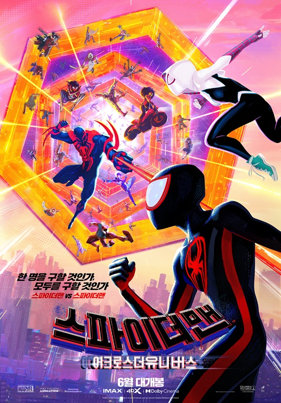

새로운 스파이더맨 마일스 모랄레스가 다중 우주(멀티버스)의 질서를 잡기 위해 다른 차원의 스파이더맨들과 조우하며 벌어지는 이야기입니다.
다양한 미술 스타일과 3D와 2D를 넘나드는 애니메이션 기법이 결합되어 압도적인 시각적 경이로움을 선사합니다.
자신의 정체성과 스파이더맨으로서의 운명 사이에서 고뇌하는 10대 소년입니다.
다른 차원에서 온 스파이더우먼으로, 마일스와 깊은 유대감을 형성합니다.